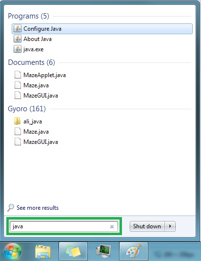
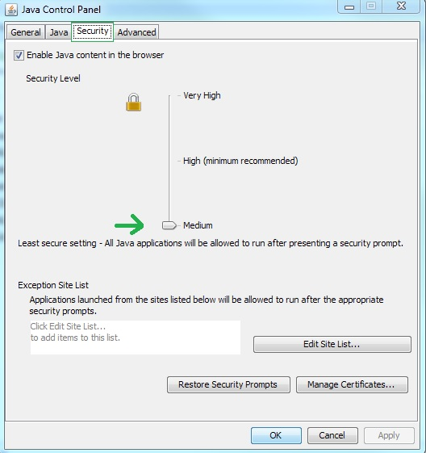

Return to main page
First, open the Java control panel. Here is a screenshot of one way to navigate there in Windows 7.

Then navigate to the security tab and adjust the setting to "medium".

Reload the page. If that doesn't work, then you might have to restart your web browser.
If it still doesn't work, then there's some other issue going on and you should contact me:
so.gyoro at gmail dot com
Return to main page